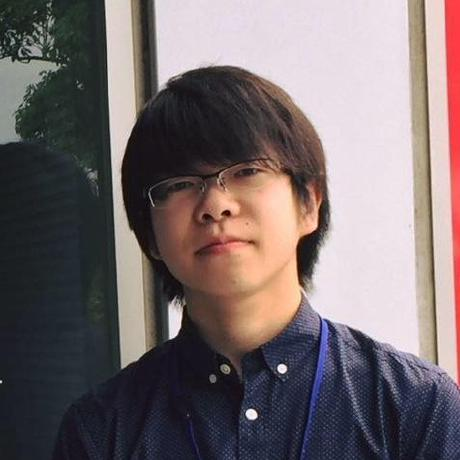

About
なまえ:西野 裕貴 / たわし
所属:筑波大学 情報学群 情報科学類 3年
書く: Python / Java / Javascript / Rust / Go / C++ / Vue.js
やる: ボウリング / スキー / 写真 / 競技プログラミング / Kaggle / サーバサイド開発 / 機械学習
メール: hirokijhiroki[at]gmail.com
History
-
SEQSENSE - Assistant engineer
2018/10 -
警備ロボット開発のアシスタントエンジニア. 警備のための異常検知技術などの開発に従事.
Python / Javascript / Django / Keras / Tensorflow
-
Seesaa - Web engineer intern
2018/06 -
技術開発部インターン. Wikiサービスやブログサービスのサーバサイド開発に従事.
Perl / Amon2 / Sledge
-
University of Tsukuba - Undergraduate student
2018/04 -
3年次編入. ソフトウェアサイエンス専攻.
-
KIT Sode Project - Smart busstop team member
2017/04 - 2018/03
情報端末を搭載した賢いバス停の開発に従事. 顔認識,年齢性別推定などの機能を開発.
Python / Swift / Tensorflow / OpenCV
-
IBM Japan - Intern
2016/08 - 2016/08
情報セキュリティの部署でのインターン. 脆弱性診断などの業務を体験.
-
Kanazawa Technical College - Student
2013/04 - 2018/03
グローバル情報工学科.
Works
-
体外式時間感覚補正器
2018
e-ZUKA スマートフォンアプリコンテスト 2018 出品作品.
機械学習を用いて作業にかかる時間を予測.
予測時間と実際にかかった時間の違いに意識的になることで時間感覚を矯正する.Swift / iOS
-

GRB ウォッチ
2015
International Space Apps Challenge 2015 fukui での作品. ガンマ線バーストを可視化し,
ジャイロ/方位センサー搭載の機器でどこでガンマ線バーストが発生したか知ることができる.PHP / Javascript
-
Twitter名刺
2014
International Students Creative Award 2014 での作品.
あらかじめARマーカー化した名刺をスマホカメラで撮影することで，名刺に紐づいているTwitterアカウントを閲覧/フォロー/ブロックすることができる.Java / Android
Awards
-
第11回情報危機管理コンテスト 経済産業大臣賞
2016
システムの管理者としてインシデント対応能力を競う大会にチーム"fukuitech"の一員として出場.
チームメンバーがとても強く予想外の優勝. -
第7回全国高等学校情報処理選手権 個人の部 優勝
2015
基本情報レベルの情報処理の知識を競う大会にAP/SC/NW持ちが出場.
案の定無双してしまい優勝. ごめんなさい. -
International Students Creative AWARD 2014 モバイルアプリ部門 優秀賞
2014
芸術系のアプリコンテストに金沢高専放送無線部主体のチーム"じょうわ"の一員として出場.
本当のチーム名は"じょうよわ"だが伝達ミスで"じょうわ"に. これはこれでヨシ! -
KOSENセキュリティコンテスト2017 第3位
2017
高専生対象のCTFコンテストに金沢高専のチーム"SandBox"の一員として出場.
ほとんどの問題を自分が解いたのは秘密. -
e-ZUKA スマートフォンアプリコンテスト2018 ヌーラボ賞 / 済生会賞
2018
福岡県飯塚市主催のアプリコンテストにチーム"金沢株式会社"の一員として出場.
実はチームに金沢市出身者はいない. 燃えました.